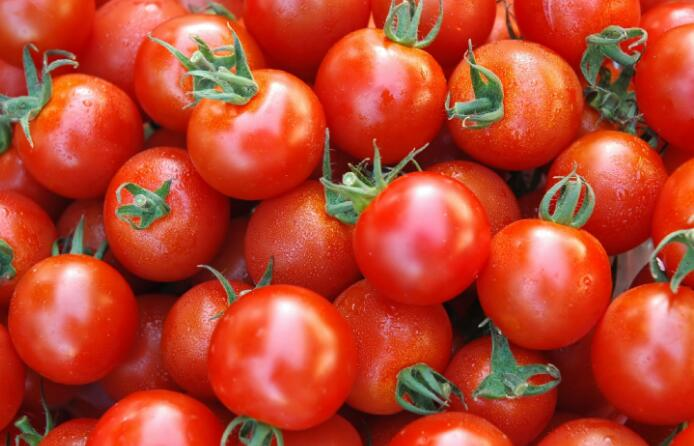

番茄
Tomato番茄习惯上称西红柿，老家在南美洲秘鲁的丛林幽谷之中。番茄属茄科，一年生草本植物。原产南美洲，我国各地均普遍栽培，夏秋季出产较多。
相传西红柿最早生长在南美洲，因色彩娇艳，人们对它十分警惕，视为“狐狸的果实”，又称狼桃，只供观赏，不敢品尝。
营养丰富、味道鲜美的番茄，被人们誉为蔬中水果、果中佳肴、绿色世界的红宝石。

它的枝叶有股难闻的气味，所以曾在很长的一段时间里被人误认为有毒植物，艳丽的果实竟无人敢吃。印第安人起初称它为“狼桃”，认为只有狼才敢吃它。16世纪时英国俄罗达拉里公爵漫游南美，曾带回一株献给女王伊丽莎白观赏。此后番茄就传入欧洲。因果实既像柿子，又似苹果，所以有“金色的苹果”和“西红柿”之名。到18世纪，西方人才用胡椒、大蒜、牛油作佐料，把西红柿当蔬菜吃。
日本已培育成西红柿树，一棵干长16米的西红柿树，结果3千多个，预计可结果上万个,而且是用温室无土栽培法育成的。日本人给它取名为妖怪西红柿。
美国加利福尼亚州培育了一种方形番茄。它比普通圆形番茄更丰满，更能耐受机器采摘和运输中碰撞。
西红柿营养丰富，既可作蔬菜，又可当水果 。其中维生素C的含量是西瓜的10倍，对治疗坏血病、感冒、过敏性紫癜症和提高人体抗病力有重要作用。
现在它是不少人餐桌上的美味。西红柿含有丰富的胡萝卜素、维生素C和B族维生素，尤其是维生素P的含量蔬菜之冠。
西红柿的食用部位为多汁的浆果。它的品种极多，按果的形状可分为圆形的、扁圆形的、长圆形的、尖圆形的;按果皮的颜色分，有大红的、粉红的、橙红的和黄色的。
红色西红柿，果色火红，一般呈微扁圆球形，脐小，肉厚，味甜，汁多爽口，风味佳，生食、熟食可，还可加工成番茄酱、番茄汁;粉红西红柿，果粉红色，近圆球形，脐小，果面光滑，味酸甜适度，品质较佳，黄色西红柿，果桔黄色果大，圆球形，果肉厚，肉质又面又沙、生食味淡，宜熟食。
 上一篇
上一篇